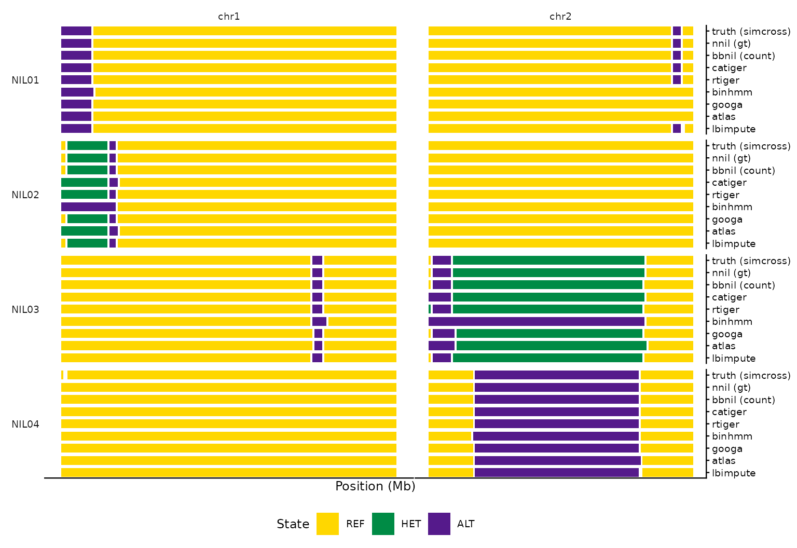

nilHMM ships a family of named ancestry callers. They all share the 3-state REF/HET/ALT chain and the breeding-design priors, and all return the same segment schema — so you can run several on the same data and compare directly. They differ in the emission model, the duration prior, and the input they expect. This vignette runs one minimal example of each on self-contained synthetic data.
Synthetic data
simulate_nil() builds a BC2S2 cohort (donor
B on recurrent parent A) on the
bundled maize map — the truth — and
simulate_counts() degrades it to observed data carrying
both allelic counts
(n_ref/n_alt, for the count callers) and a
hard genotype g in {0,1,2,3} (for the genotype
callers):
truth <- simulate_nil("BC2S2", n = 8, chr = 1:2, n_markers = 300, donor = "B",
names = sprintf("NIL%02d", 1:8), seed = 1)
obs <- simulate_counts(truth, depth = 6, seed = 1)
counts <- obs[c("name", "donor", "chr", "pos", "n_ref", "n_alt")]
gt <- obs[c("name", "donor", "chr", "pos", "g")]The four grid callers (emission × duration)
The pure cells of the engine’s grid share the REF/HET/ALT chain and
differ only in two axes: the emission (categorical gt vs
count/BetaBinomial) and the duration (geometric vs rigidity).
-
nnil— Holland’s nNIL: categoricalgtemission + geometric duration. A called genotypegis used directly; read counts are first hard-called (1/3–2/3 cutoffs). Error model:germ,gert,p,mr,nir. -
bbnil— the low-coverage count extension: count/BetaBinomial emission (err,conc;fit_means = TRUEEM-fits the per-state alt fractions) + the same geometric duration. -
catiger— categoricalgtemission + rigidity duration. -
rtiger— count/BetaBinomial emission + rigidity duration (below).
nnil <- call_ancestry(gt, caller = "nnil", design = "BC2S2") # gt + geometric
bbnil <- call_ancestry(counts, caller = "bbnil", design = "BC2S2",
rrate = 1e-4, err = 0.01) # count + geometric
catiger <- call_ancestry(gt, caller = "catiger", design = "BC2S2", rigidity = 5L) # gt + rigidity
nrow(nnil); nrow(bbnil); nrow(catiger)
#> [1] 51
#> [1] 50
#> [1] 47
rtiger — rigidity segmentation
A Julia-free port of the RTIGER rigidity HMM (EM + Viterbi + border
re-placement), the count-emission rigidity cell. rigidity
is the integer minimum run length.
rt <- call_ancestry(counts, caller = "rtiger", design = "BC2S2",
rigidity = 5L, seed = 1L)
head(rt, 3)
#> source donor name chr start_bp end_bp state
#> 1 nilHMM B NIL01 1 37410 27727705 2
#> 2 nilHMM B NIL01 1 29573725 308322690 0
#> 3 nilHMM B NIL01 2 98554 223047189 0
binhmm — per-bin calling
Bins the genome (default 1 Mb) and calls per-bin state with an anchored 3-state Gaussian-emission HMM. Good for noisy or uneven coverage.
bh <- call_ancestry(counts, caller = "binhmm", design = "BC2S2", bin_size = 5e6)
head(bh, 3)
#> source donor name chr start_bp end_bp state
#> 1 nilHMM B NIL01 1 37410 29573725 2
#> 2 nilHMM B NIL01 1 31419744 308322690 0
#> 3 nilHMM B NIL01 2 98554 243484148 0
googa / atlas — competitive-alignment
(transcript ancestry)
For transcript / competitive-alignment data:
n_ref/n_alt are the recurrent and donor read
counts, thresholded into hard genotype calls (atlas_thresh,
atlas_het, atlas_min_reads) then smoothed.
googa is the faithful reproduction — gt +
geometric, matching GOOGA’s recombination-fraction F2
HMM (Flagel 2019; Veltsos 2024), which carries no rigidity.
atlas is this work’s transcript caller:
the same thresholding with the rigidity duration.
gg <- call_ancestry(counts, caller = "googa", design = "BC2S2",
atlas_thresh = 0.95, atlas_het = 0.25, atlas_min_reads = 5L)
at <- call_ancestry(counts, caller = "atlas", design = "BC2S2", rigidity = 5L,
atlas_thresh = 0.95, atlas_het = 0.25, atlas_min_reads = 5L)
head(gg, 3); head(at, 3)
#> source donor name chr start_bp end_bp state
#> 1 nilHMM B NIL01 1 37410 27727705 2
#> 2 nilHMM B NIL01 1 29573725 308322690 0
#> 3 nilHMM B NIL01 2 98554 243484148 0
#> source donor name chr start_bp end_bp state
#> 1 nilHMM B NIL01 1 37410 27727705 2
#> 2 nilHMM B NIL01 1 29573725 308322690 0
#> 3 nilHMM B NIL01 2 98554 243484148 0
lbimpute — very low coverage
A native port of LB-Impute (Fragoso et al. 2014) for
<1× biallelic populations: a coverage-aware emission
bounded by genotypeerr, and a distance-dependent transition
(recombination scales with the marker gap over recombdist).
No design priors needed.
lb <- call_ancestry(counts, caller = "lbimpute", recombdist = 1e7, genotypeerr = 0.05)
head(lb, 3)
#> source donor name chr start_bp end_bp state
#> 1 nilHMM B NIL01 1 37410 27727705 2
#> 2 nilHMM B NIL01 1 29573725 308322690 0
#> 3 nilHMM B NIL01 2 98554 223047189 0The no-HMM genotype baseline (call_gt(), not a
caller)
The het-excess “control” is a per-site genotype
call, deliberately not an ancestry caller — nilHMM
keeps a wall between the ancestry mosaic and genotypes, so
call_ancestry() does not dispatch it. Call
call_gt() directly: each (marker, sample) is
decided independently from its own read counts, with no linkage.
prior = "flat" gives the maximum-likelihood call (het-blind
at depth 1); prior = "hwe" gives the Hardy–Weinberg
posterior MAP (het-excess at low depth).
ml_calls <- call_gt(counts$n_ref, counts$n_alt, prior = "flat") # maximum likelihood
hw_calls <- call_gt(counts$n_ref, counts$n_alt, prior = "hwe") # HWE MAP (het-excess)
table(ml_calls, useNA = "ifany"); table(hw_calls, useNA = "ifany")
#> ml_calls
#> 0 1 2 <NA>
#> 1864 214 313 9
#> hw_calls
#> 0 1 2 <NA>
#> 1883 189 319 9These are genotype calls (0/1/2), not the segment schema. To bring a
genotype baseline into the ancestry comparison, convert it yourself
(to_segments() on the genotype-as-state); the package
provides no genotype→mosaic shortcut. call_gt() is also
distinct from the deterministic interpolate_genotype()
densifier.
fsfhap — full-sib families
A port of TASSEL’s FSFHap. Unlike the per-line callers it
pools each family, so it needs a family
grouping and a called genotype g. See
vignette("fsfhap") for the full workflow (HapMap + pedigree
input, design routing, parallelism).
fam <- transform(gt, family = donor) # a family grouping on the genotype table
# (a real family needs enough segregating markers; see vignette("fsfhap"))Comparing callers
Because the output schema is shared, comparison is a table join away — e.g. how many segments and which states each caller produced on the same counts:
summ <- function(x) c(segments = nrow(x), states = length(unique(x$state)))
rbind(nnil = summ(nnil), bbnil = summ(bbnil), catiger = summ(catiger),
rtiger = summ(rt), binhmm = summ(bh), googa = summ(gg), atlas = summ(at),
lbimpute = summ(lb))
#> segments states
#> nnil 51 3
#> bbnil 50 3
#> catiger 47 3
#> rtiger 48 3
#> binhmm 32 2
#> googa 48 3
#> atlas 44 3
#> lbimpute 51 3Chromosome painting
The real payoff of the shared schema is that you can paint the callers on the same axes — here the per-sample callers run above, against the simcross ground truth — and eyeball whether the independent methods recover the donor (B) blocks. Each row is a NIL, each column a chromosome, and within a cell the tracks are stacked as bands (REF gold / HET green / ALT purple), with the noise-free truth on top.
The truth track is just to_segments() on the
simulate_nil() table (its state is the
noise-free donor mosaic, before simulate_counts() added
depth and missingness). paint_calls() then stacks it above
the callers: rbind each track’s segments with a column
naming it, and pass that column as track (its levels stack
top-down, so truth goes first).
tracks <- list("nnil (gt)" = nnil, "bbnil (count)" = bbnil, catiger = catiger,
rtiger = rt, binhmm = bh, googa = gg, atlas = at, lbimpute = lb)
comparison <- do.call(rbind, Map(function(seg, m) { seg$method <- m; seg },
tracks, names(tracks)))
# simcross ground truth (the simulate_nil() table) as the top track
truth_seg <- to_segments(truth)
truth_seg$method <- "truth (simcross)"
comparison <- rbind(truth_seg, comparison)
comparison$method <- factor(comparison$method,
levels = c("truth (simcross)", names(tracks)))
paint_calls(comparison, track = "method", samples = sprintf("NIL%02d", 1:4))
The callers recover the true donor blocks — each caller’s band lines
up with the truth on top — with expected method-specific behaviour
(e.g. binhmm paints broader per-bin blocks). This is the
same painting used for the real coverage-sweep NILs, where the truth
track is instead an independent data source or a high-confidence call
set.
For per-caller parameters and lineage, see
?call_ancestry and the README caller table. ```